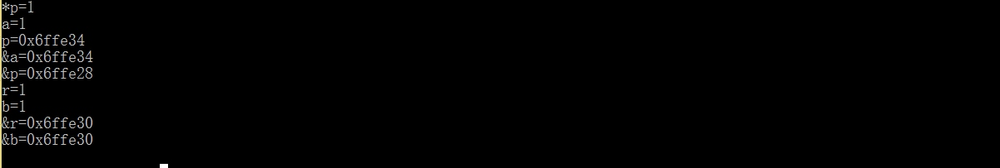
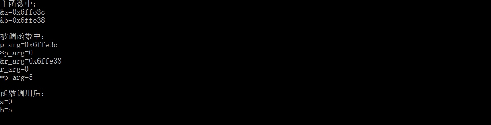
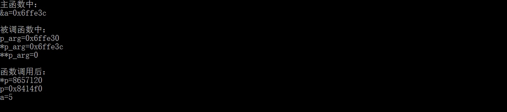
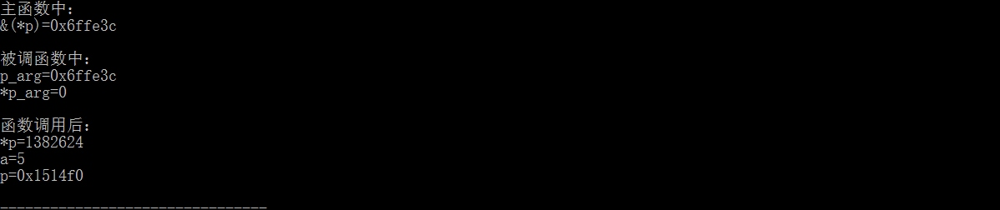

C++ 用了这么久，发现身边还是有同学不能理解 C++ 的指针、引用的本质，对指针的指针、指针的引用更是十分迷糊。现在让我们来理解一下它们吧！
1. 指针与引用
指针与引用都可以对对象进行直接的操作，通常作函数的参数传递或是函数返回的对象。
1.1 理解本质
指针 ，本质上是一个变量，指向一块内存空间，只不过该内存存放的是某个变量的地址。这就不难理解，指针可以改变指向，也就是存放别的变量的地址；也可以通过 * 解析所存地址，找到该变量，从而对其修改。
例：
这时 p 存放的就是一个int型变量的地址。
引用 ，本质上是某个变量的别名，通过引用访问该变量，操纵的其实是同一块内存，同一个对象，因此 引用不能为空 ，若对象不存在，又怎会存在别名。
仔细看下面的例子：

1.2 注意事项
指针： 指针可以为空，因此在访问指针指向内容之前需要进行判空。由于可以多个指针指向同一块内存区域，一旦通过某一指针释放了内存，会造成野指针的出现。对指针直接操作，改变的回事指针的指向，并非其所指向的内容。
引用： 引用必须初始化。引用不可改变指向。对引用操作，会改变引用指向的内容。
1.3 参数传递
指针传递参数和引用传递参数具有本质的不同。
如果你了解一点汇编语言或者函数调用原理的话，那么这块内容你应该一下就明白了。
在函数调用时，被调函数会在栈中开辟一块空间，按照从右到左将实参值保存在栈的最低端（其实还有主函数返回地址等其他要保存的数据，这里不详细赘述）。指针传递参数本质是 传值 ，只不过这里的值是实参的地址，这就给了你在被调函数中改变实参的可能。你可以将形参看作一个 新的指向实参的指针 ，所以你可以使用星号解析来在被调函数中改变实参的值，但是该形参指针也可以改变指向。
由于这样访问实参的内容，每次都要用星号来解析。c++ 给出了另一种解决方案-引用。
在引用传递参数中，栈中存放的也是实参的地址，被调函数中对引用形参的操作都会根据 间接寻址 （汇编知识）来访问实参的内容，所以，对引用形参的操作都会反映到实参上。
仔细看例子：

因此，对于引用参数的处理都会因间接寻址转到对主函数中实参的处理。
对于指针传递参数，只是相当于再生了一个指向 原实参指针指向地址的指针 ，故，你只能通过这个再生指针改变它指向的内容或者是它本身的指向。这时候和实参指针就已经失去了联系，你 无法改变实参指针指向 。要想改变实参指针的指向，就只能用下面将要介绍的指针的指针或者指针的引用。
1.4 返回指针、引用：
当函数返回一个值时，通常返回的都是这个值的临时对象，也就是一个值的拷贝。
当函数返回引用类型时，没有复制返回值，返回的是对象本身。
因此 注意 :
- 不要返回局部对象的引用！
- 不要返回指向局部对象的指针！
当函数执行完毕时，将释放分配给局部对象的存储空间。此时对局部对象的引用就会指向不确定的内存！同样，返回局部变量的指针，当函数结束时，局部对象被释放，返回的指针就变成了不再存在的对象的悬垂指针。
到这里，如果还想加深对指针和引用的理解可以查阅 C++符号表 的相关知识。
2. 指针的指针和指针的引用
通过前面的理解，我们能意识到，现在还缺少一种能改变实参指针指向的手段。
2.1 指针的指针
不如首先来看一个例子：

首先我们需要先明白这三种形式在被调函数中代表什么：p_arg: 是一个指向指针的指针,里面存的是 *p的地址;*p_arg: 就是实参，一个指向变量 a 的指针，修改它，就可以修改实参指针的指向;**p_arg: 是实参指向的内容，即 a的值。
2.2 指针的引用
同样，看例子：

需要明白下面两种形式在被调函数中代表的意义：p_arg： 是指针的引用，主函数里的 *p；*p_arg : 实参的内容，即主函数中a 和 *p的值。
首先从名称上来理解， 指针 的 引用 , 既然是引用， 那么它就是一个别名，是一个指针的别名，这就说明它本质上还是一个指针，所以在函数内它还是和指针一样的用法。只不过这个指针改变指向会影响实参指针的指向。
而 *解析得到的还是内容。
参考：
请多多指教 ！